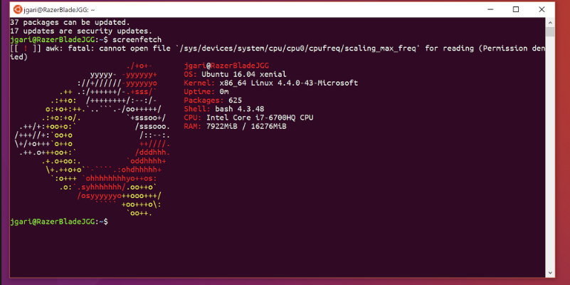

En Grupo‑1 somos especialistas en la configuración, administración y seguridad de servidores Linux. Trabajamos con distribuciones profesionales como Ubuntu Server, Debian, CentOS, Rocky Linux y más.
Linux es la base de la mayoría de infraestructuras modernas gracias a su estabilidad, seguridad y rendimiento. Es la opción ideal para empresas que buscan fiabilidad y control total sobre sus sistemas.
Desde 250€
Configuración inicial y optimización básica.
Desde 500€
Incluye seguridad avanzada y monitorización.
Desde 1200€
Implementación completa y soporte continuo.